It's almost the end of the year! We've done a lot of reading and rereading and hunting through library recommendations and editor's picks for good reads. This time of year is for compiling our favorite books and making someone else's TBR stack even longer. Here are the books that gripped Coast-to-Coast staff and left us pining for more!
Staff Picks: The Best Books We've Read This Year (So Far)
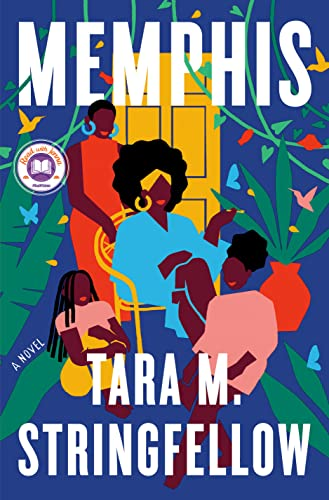
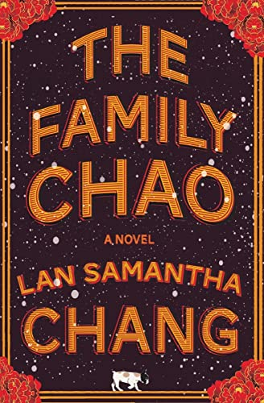
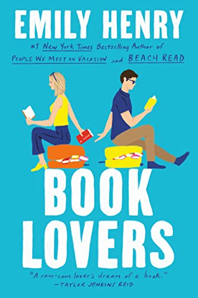
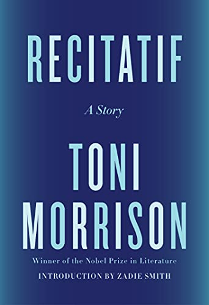
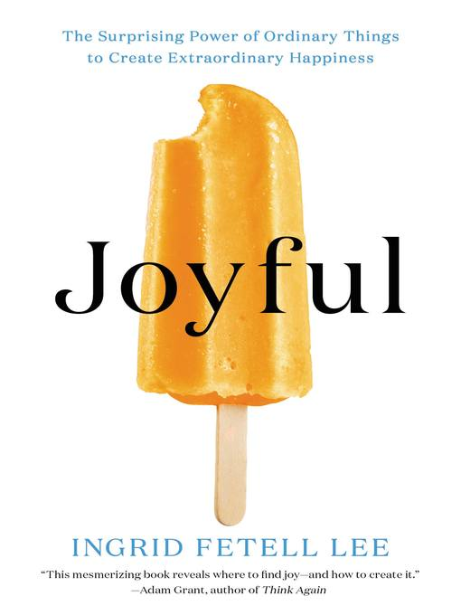
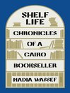
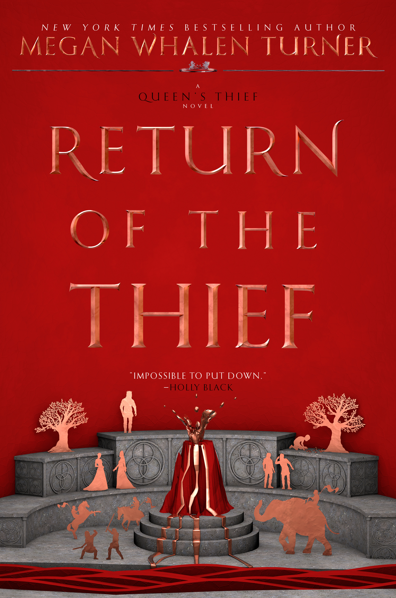
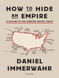
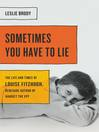
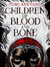
Memphis
Memphis is an engrossing debut novel, a story about three generations of Southern Black women and their legacy, challenges, failures, joys, sorrows, and triumphs. I had heard about this novel months before its release and looked forward to reading it, but I was thrilled with the extent of Stringfellow’s storytelling talent. Beautifully written prose, unforgettable characters, messages of sisterhood and community. The author shows tremendous insight into the effects of violence on Black women in America, told from a captivating Southern female perspective that makes Memphis one of the most compelling must-reads of 2022 and beyond.
-Denny S. Brycebook critic
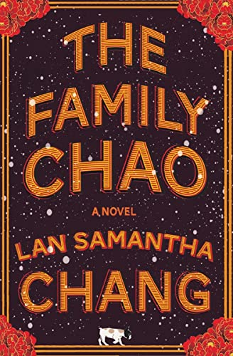
The Family Chao: A Novel
In Haven, Wisconsin, overbearing yet charismatic Leo Chao runs the Fine Chao restaurant with help from his wife, Winnie, and his eldest son, Dagou. Then his other two sons return: Ming, the middle son, only in town due to Winnie’s explicit request; and James, the youngest, home from college for winter break. Tensions ramp up as the brothers emotionally spar with their father and try to deal with their own individual needs for love, security, and family. Loosely based on The Brothers Karamazov, Chang’s novel is a riveting and astute character study; Dostoevsky himself would surely approve.
-Ilana Masad
book critic
book critic
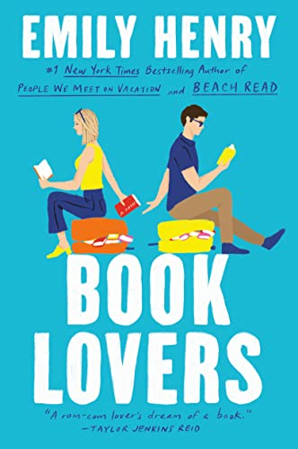
Book Lovers
In someone else’s rom-com, literary agent Nora Stephens is the villain — a city-slicker-workaholic the hero dumps for a small-town love. That script is flipped when Nora’s sister drags her to Sunshine Falls, an idyllic, small town in North Carolina. Nora’s vacation is off to a great start, until she runs into cold-hearted New York book editor Charlie Lastra, whose family owns the failing local bookshop. Their chemistry crackles as they try to outwit each other with taunts, teases and maybe flirts. Between laugh-out-loud exchanges about Bigfoot erotica, they consider what “happily ever after” looks like for two rom-com “villains.”
-Lauren Migaki, senior editor, NPR Ed
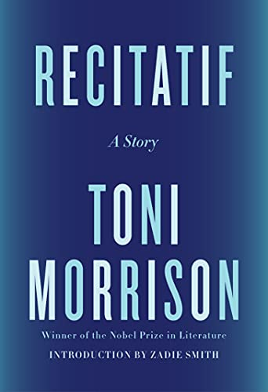
Recitatif: A Story
Three years after her death, it still seems reasonable to mourn that we’ll have no more novels from Toni Morrison. But, luckily, Morrison’s sole foray into short fiction, Recitatif, was released in book form earlier this year. The story tracks two girls from their first meeting at a shelter for wards of the state to chance encounters later in life. It’s powerful, and the characters impeccably formed, as we would expect from Morrison. Race is central to its two characters’ interactions, but the reader is never told which character is Black and which is white. The implications of that decision require more space than is allotted here, but the result is so worth the read.
-Ericka Taylor, organizing director for DC Working Families, book critic
The Miraculous True Story of Nomi Ali
Set in the Andaman Islands over the course of oppressive imperial regimes, The Miraculous True History of Nomi Ali is a complex, gripping homage to those omitted from the collective memory. Nomi and Zee are Local Borns—their father a convict condemned by the British to the Andaman Islands, their mother shipped off with him. The islands are an inhospitable place, despite their surreal beauty. In this unreliable world, the children have their friend Aye, the pet hen Priya and the distracted love of their parents to shore them up from one day to the next. Meanwhile, within the walls of the prison, Prisoner 218 D wages a war on her jailers with only her body and her memory. When war descends upon this overlooked outpost of Empire, the British are forced out and the Japanese move in. Soon the first shot is fired and Zee is forced to flee, leaving Nomi and the other islanders to contend with a new malice. The islands—and the seas surrounding them—become a battlefield, resulting in tragedy for some and a brittle kind of freedom for others, who find themselves increasingly entangled in a mesh of alliances and betrayals. Ambitiously imagined and hauntingly alive, The Miraculous True History of Nomi Ali writes into being the interwoven stories of people caught in the vortex of history, powerless yet with powers of their own: of bravery and wonder, empathy and endurance. Uzma Aslam Khan's extraordinary new novel is an unflinching and lyrical page-turner, an epic telling of a largely forgotten chapter in the history of the subcontinent.
-Beaverton City Library, public library, OR
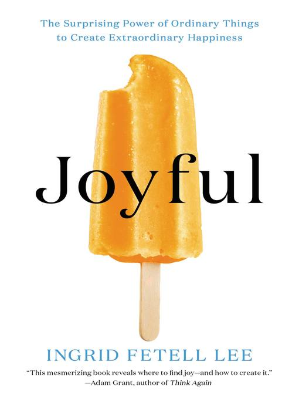
Joyful: the Surprising Power of Ordinary Things to Create Extraordinary Joy
In Joyful, designer Ingrid Fetell Lee explores how the seemingly mundane spaces and objects we interact with every day have surprising and powerful effects on our mood. Drawing on insights from neuroscience and psychology, she explains why one setting makes us feel anxious or competitive while another fosters acceptance and delight--and, most importantly, she reveals how we can harness the power of our surroundings to live fuller, healthier, and truly joyful lives.
-Goodreads
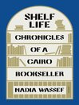
Shelf Life: Chronicles of a Cairo Bookseller
Shelf Life is such a unique memoir about career, life, love, friendship, motherhood, and the impossibility of succeeding at all of them at the same time . It is the story of Diwan, the first modern bookstore in Cairo, which was opened by three women, one of whom penned this book. As a bookstore owner I found this fascinating. As a reader I found it fascinating. Blunt, honest, funny .
-Jenny Lawson, author of Broken (in the best possible way)
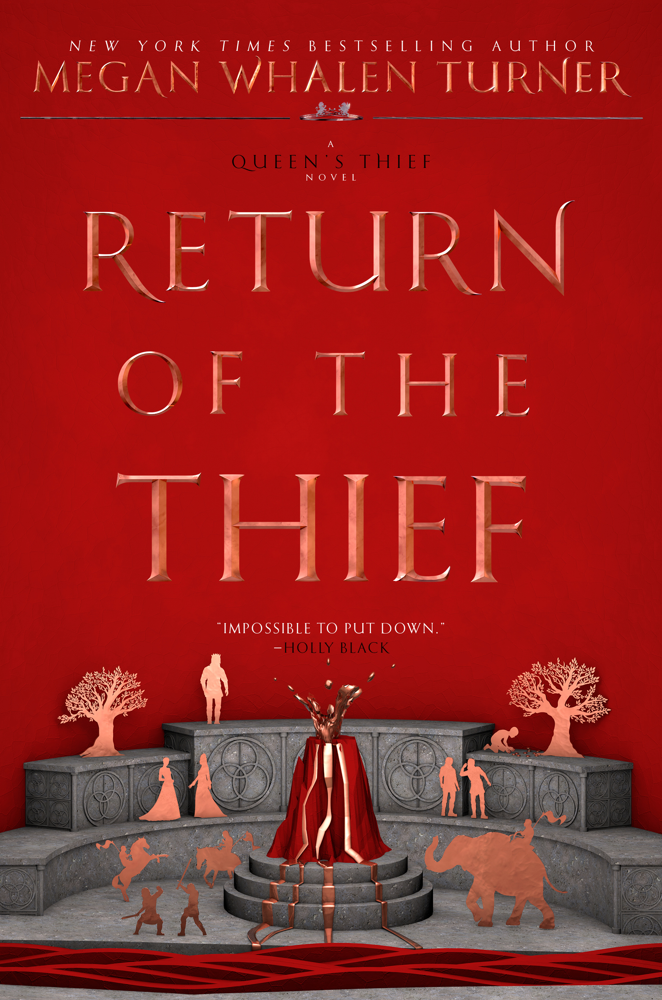
Return of the Theif
In the triumphal final volume of the Queen’s Thief series, more than 20 years after the publication of The Thief, Turner sticks her landing with aplomb. Dissent from within threatens to undo the delicate union of nations Attolia, Eddis, and Sounis under Eugenides, former Thief of Eddis. As the emperor of the massive Mede empire begins a full-scale invasion, the countries marshal their resources to defend a crucial territory, testing the allied nations’ bond. Narrator Pheris, an often mistreated nonverbal child, born “with the infirmity that ran in my family,” becomes Eugenides’s attendant. Through cautious, wily Pheris’s adept observations (“the less people want to see you, the easier it becomes to be invisible in plain sight”), Turner highlights Eugenides’s actions, personality—sometimes kind, often calculatingly brutal—and knack for the unexpected reversal. Building to a succession of stirring climactic scenes that twine long-standing thematic and narrative arcs, Turner offers a fulfilling conclusion that rewards knowledge of the previous books.
-Publishers Weekly
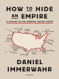
How to Hide An Empire: a History of the Greater United States
A pathbreaking history of the United States' overseas possessions and the true meaning of its empire. We are familiar with maps that outline all fifty states. And we are also familiar with the idea that the United States is an "empire," exercising power around the world. But what about the actual territories—the islands, atolls, and archipelagos—this country has governed and inhabited? In How to Hide an Empire , Daniel Immerwahr tells the fascinating story of the United States outside the United States. In crackling, fast-paced prose, he reveals forgotten episodes that cast American history in a new light. We travel to the Guano Islands, where prospectors collected one of the nineteenth century's most valuable commodities, and the Philippines, site of the most destructive event on U.S. soil. In Puerto Rico, Immerwahr shows how U.S. doctors conducted grisly experiments they would never have conducted on the mainland and charts the emergence of independence fighters who would shoot up the U.S. Congress. In the years after World War II, Immerwahr notes, the United States moved away from colonialism. Instead, it put innovations in electronics, transportation, and culture to use, devising a new sort of influence that did not require the control of space. Rich with absorbing vignettes, full of surprises, and driven by an original conception of what empire and globalization mean today, How to Hide an Empire is a major and compulsively readable work of history.
-OverDrive
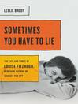
Sometimes You Have to Lie: the Life and Times of Louise Fizhugh, Renegade Author of Harriet the Spy
In this inspiring biography, discover the true story of Harriet the Spy author Louise Fitzhugh — and learn about the woman behind one of literature's most beloved heroines. Harriet the Spy , first published in 1964, has mesmerized generations of readers and launched a million diarists. Its beloved antiheroine, Harriet, is erratic, unsentimental, and endearing-very much like the woman who created her, Louise Fitzhugh. Born in 1928, Fitzhugh was raised in segregated Memphis, but she soon escaped her cloistered world and headed for New York, where her expanded milieu stretched from the lesbian bars of Greenwich Village to the art world of postwar Europe, and her circle of friends included members of the avant-garde like Maurice Sendak and Lorraine Hansberry. Fitzhugh's novels, written in an era of political defiance, are full of resistance: to authority, to conformity, and even — radically, for a children's author — to make-believe. As a children's author and a lesbian, Fitzhugh was often pressured to disguise her true nature. Sometimes You Have to Lie tells the story of her hidden life and of the creation of her masterpiece, which remains long after her death as a testament to the complicated relationship between truth, secrecy, and individualism.
-Seal Press, publisher
Only You Can Save Mankind
An author’s note explains that this volume, the first in the “Johnny Maxwell” trilogy, was written during the first Gulf War, though this is its first publication in the U.S. Johnny Maxwell is like many boys, spending his time after school busily blowing up alien ScreeWee fighters in his new computer game. Until one of the ScreeWee talks to him. She is Captain of the ScreeWee fleet, and she has asked Johnny for safe conduct back to ScreeWee space, because “[w]hen we die, we die. Forever.” Juxtaposed against Johnny’s inexplicably real involvement in a computer game—when he dreams, he enters game space and can wake up only when he “dies”—are the televised events of the first war in Iraq, when the nightly news showed missile’s-eye views of the remote bombing of Baghdad. This offering doesn’t pretend to subtlety at all, but the premise is so very intriguing, and so well-presented (in characteristically wry Pratchett fashion), that Johnny’s cry for the essential humanity of all to be recognized, whether English, Iraqi or ScreeWee, loses none of its poignancy—or timeliness.
-Kirkus Review
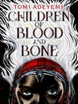
Children of Blood and Bone
With four starred reviews, Tomi Adeyemi's West African-inspired fantasy debut conjures a world of magic and danger, perfect for fans of Leigh Bardugo and Sabaa Tahir. They killed my mother. They took our magic. They tried to bury us. Now we rise. Zélie Adebola remembers when the soil of Orïsha hummed with magic. Burners ignited flames, Tiders beckoned waves, and Zélie's Reaper mother summoned forth souls. But everything changed the night magic disappeared. Under the orders of a ruthless king, maji were killed, leaving Zélie without a mother and her people without hope. Now Zélie has one chance to bring back magic and strike against the monarchy. With the help of a rogue princess, Zélie must outwit and outrun the crown prince, who is hell-bent on eradicating magic for good. Danger lurks in Orïsha, where snow leoponaires prowl and vengeful spirits wait in the waters. Yet the greatest danger may be Zélie herself as she struggles to control her powers and her growing feelings for an enemy.
-Teen Vogue